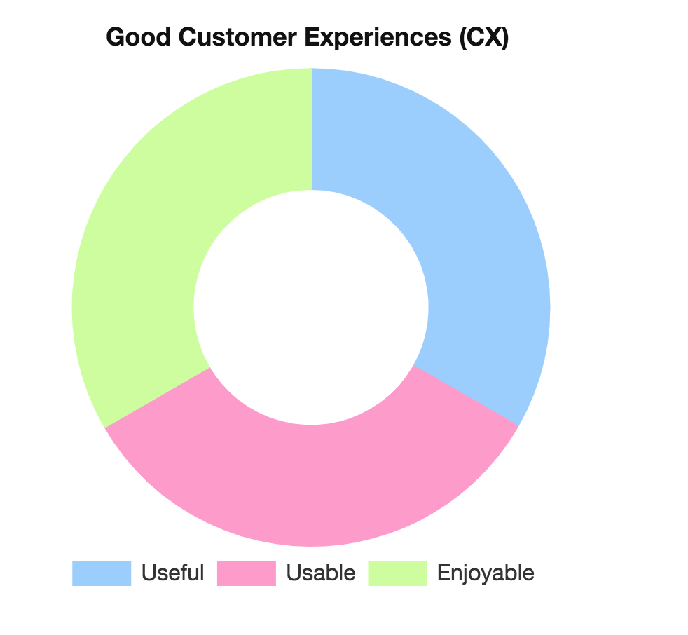
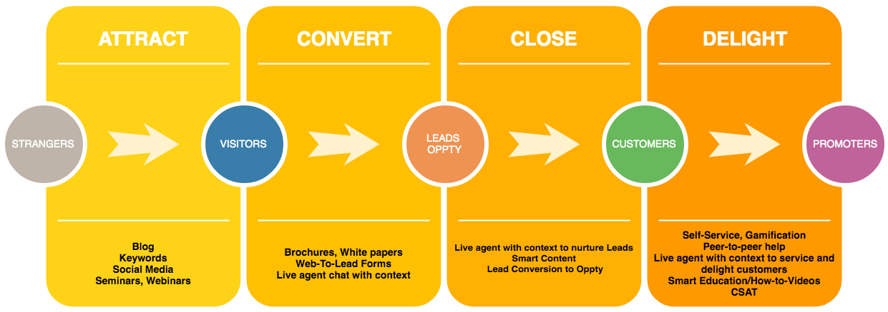
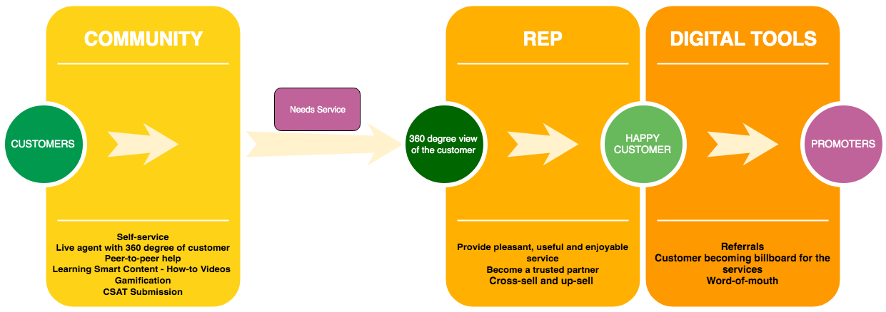

Customer Experience (CX) in Financial Services
How to wow your customers in every interaction?
Draft version
Executive Summary
Today’s customers are more tech-savvy and their expectations are different and they demand new commitment to Customer Experience (CX) and game-changing innovations in Financial Services. The half of the world’s population will be digital natives by 2020 and they never lived in a non-digital world. Each connected customer owns around 3 connected devices on average. It is estimated that US adults will spend around 3 hours a day using a mobile device this year. Their financial services experiences shouldn’t force them to relive their parents’ non-digital world. They expect gamification for the learning and engagement that makes financial services activities more fun. They expect more relevant, engaging, welcoming and effective digital experiences. They do not want to repeat who they are and what they want when serviced. In this paper, we explain how Salesforce Unified Platform can help businesses to meet and exceed these needs and enable customer success.
Strategic focus for Fourth Industrial Revolution
Strategic focus of organisations in Financial services in preparing for the fourth industrial revolution will be :
- Customer Experience (CX)
- Special support for the connected customers
- Operational efficiency
- Profitability
- Work more effectively with customers across generations
- Solicit customer feedback
- Identify potential issues and proactively solve problems
- Perform new (non-phone) forms of personal service like social media and live chat
-
1. In the digital age, every interaction has to wow the customer.
With few differentiators left and empowered customers eager to share, a standout
customer experience (CX) matters more than ever.
- Community Cloud
- Commerce Cloud
-
2. An enterprisewide CRM vision will see you through rapid change.
To thrive in a climate of high-speed change, craft an enterprise-wide customer
experience vision and a strategy to make it real.
- Sales Cloud
- Service Cloud
-
3. Analytics is a game-changer, but implementation can be tricky.
Customer analytics can enable richly relevant interactions. The best results depend on
leading-edge information management strategies.
- Einstein Analytics
-
4. To seize new marketing opportunities, integration is key.
Integrated multichannel marketing hubs orchestrate efforts across touch points to
maximize results and avoid a disjointed customer experience.
- Marketing Cloud
- MuleSoft
- Heroku Kafka
- Quip
-
5. New technologies are forcing a customer service overhaul.
With sensors, location services, Web self-service, Twitter, Facebook, video and
mobile-everything in the mix, customer service needs a major reboot.
- Service Cloud
-
6. Personal analytics promise new opportunities.
The quantified self will soon have a major impact on your customer relationships.
Now is the time to consider what it will mean for your business.
- Einstein Analytics
-
7. Social engagement must be strategic to deliver results.
Anchoring social strategy firmly to organizational and performance goals helps it live
up to its potential.
- Sales Cloud
- Service Cloud
- Marketing Cloud
-
8. New mobile sales tools can deliver real business value.
The latest mobile technologies are enabling new value-added selling processes,
improving sales effectiveness and helping sales teams achieve revenue targets.
- Salesforce App
- Heroku
-
9. For just-right personalization, look to adaptive analytics.
Adaptive analytics is taking personalization — balanced with privacy — to a whole new
level, creating a “segment of one” that makes customers feel valued.
Adaptive analytics are useful for both the marketing and sales teams. Adaptive analytics can help inform each team when it’s optimal to engage and with what content. Predictive analytics looks at your customer data and, based on certain traits like firmographics, tells you which prospects look most like your existing customer base, and are therefore more likely to be qualified.- Marketing Cloud
- Einstein Analytics
-
10. Customer-facing analytics is a win-win for CRM.
Customers want greater transparency. Delivering it enables greater personalization and
can create new data-driven business opportunities.
Customer-facing analytics let companies increase their competitive edge by enhancing the customer experience (CX), increasing loyalty and retention, reducing service and support cost.- Service Cloud
- Service Analytics
- Community Cloud
Key attributes of a good CX
Useful: they deliver value
Usable: they make it easy to find and engage with the value
Welcoming and Enjoyable: they are emotionally engaging so that people want to use them
This mandates strong understanding of customers and their goals and preferences at every stage of the journey and delivering the CX with the digital focus.

Customer Experience Trends
Omnichannel Customer Service
Enable customers to conduct business online, over the phone, in a branch office location, using a mobile app by providing fluid, streamlined, integrated, seamless and personalized consistency at all touch points.
Salesforce consumer surveys reveal that 75% of consumers expect a consistent experience wherever they engage.
New and enhanced Self-Service Options - Forums/Communities
By 2020, 85% of customer interactions will be automated as per Gartner. Customers prefer web or mobile self-service over speaking with an agent by phone. Customers are getting more comfortable in all self-service communication channels like online forums/communities.
Customers will rely on digital tools for most of their service needs and want to manage transactions and solve problems on their own. Customers don’t want to get online, click around, and end up calling an 1-800 number that routes them through an array of service reps. They expect to have how-to-do videos in place of traditional written content to understand products and services.
They expect the company website to have live agent chat features to assist them at their exact point of need.
Well designed system will avoid creating frustrated customers who attempt to self-serve first and then escalate issues beyond the scope of their chatbots’ abilities.
Relationships
Relationships are at the center of everything. Customers may want to do more on their own by using self-service, for the sake of convenience, there remains a need for a helpful hand (a real, live one) at the other end of the transaction. Financial Services companies need to train the employees to:
Salesforce Community Cloud offers a world-class self-service features to your customers and partners.
Empowering Customers by Education and Gamification
Financial services companies need to provide customers with proper education at the right time
and right place in their journey from shopping to account opening, so they feel more comfortable and
prepared to manage their assets, make investment decisions, select the right products and services.
Customers expect gamification to get the feel of their accomplishment in the learning process and helping
peers. Rewards in the gamification will create a special affinity to the services of the company.
myTrailhead from Salesforce provides the world-class Education and Gamification to the customers in every industry including
Financial Services Industry.
Data-driven Personalization and Customer 360
Collecting and harnessing the right data to create contextual insights about the customers using advanced analytics and machine learning will help Financial Services companies to deliver relevant experiences to the customers in their journey across all channels.

Getting Customers - Strangers to Customers & Promoters
By offering world-class customer experience (CX) in CRM you can convert the Strangers to your Customers.
Effects of Good Customer Experience
By offering world-class customer experience (CX) you can convert your Customers to your Promoters.
Good Customer Experience - Customer Success - Sequence
The following Sequence diagram shows how companies can wow their customers on every interaction using Salesforce platform and their on-prem systems.

Customer 360
The following clock diagram shows the Customer-360 view required to provide high quality Customer Experience (CX) in financial services to wow the customers on every interaction.

Salesforce Unified Platform for Customer Success providing Customer 360
The following diagram shows how Salesforce provides Customer-360 view to wow customers on every interaction with the products from Salesforce Unified Platform.
Note: Place your mouse over the [+] in the below diagram
Here is how the products in Salesforce Unified Customer 360 Platform can help you to take care of Gartner's Customer 360 ten key take-aways :
Salesforce Unified Platform Architecture
The following diagram shows the Salesforce Unified Platform Architecture which powers the World's #1 CRM and Customer Success platform which can help you to wow your customers on every interaction.